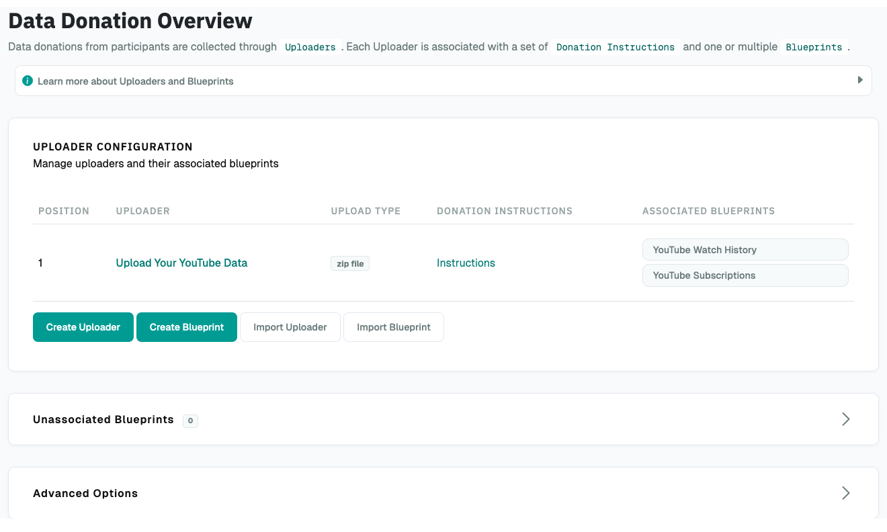
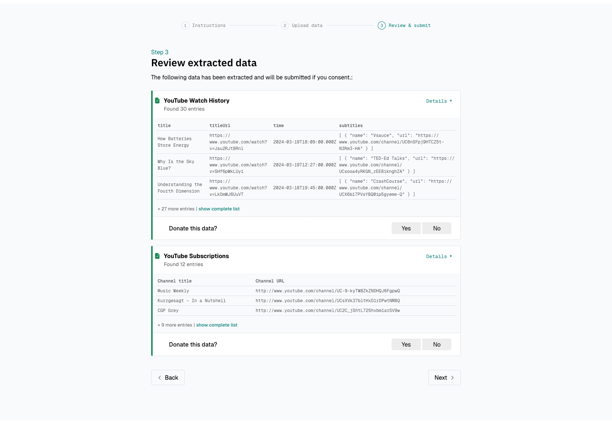
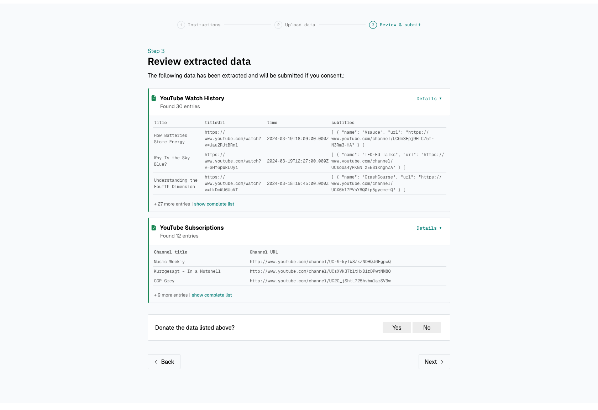

Data Donation Configuration¶
You configure the data donation step with three building blocks:
- Uploaders: An Uploader is an upload form for one file, either a single file or a ZIP file. If participants should donate data from several platforms, create one Uploader per platform.
- Instructions: Each Uploader can have instructions that show participants how to request and download the file from the platform.
- Blueprints: A Blueprint defines which data DDM extracts from the uploaded file. Each Uploader has one or more Blueprints, for example one for the watch history and one for the search history in the same YouTube export.
To configure the data donation step, open the Project Hub and, under Data Collection Configuration, click Data Donation:

Uploader Configuration¶
Settings
Upload Type
Single file if participants upload one file, such as a CSV or JSON file. Zip file if they upload a ZIP file, as most platforms provide.
Name
Internal name of the Uploader. Participants don't see it. Must be unique within the project.
Extract nested zip files
If enabled, DDM also opens ZIP files inside the uploaded ZIP file, so that Blueprints can extract data from the files they contain.
In the file paths of a Blueprint, files inside a nested ZIP file include the ZIP file's
name. For example, inner.json inside nested.zip has the path nested.zip/inner.json.
Extraction depth
How many levels of nested ZIP files DDM opens. With 1, DDM opens ZIP files inside the
uploaded ZIP file, but not ZIP files inside those. With 0, DDM opens only the uploaded
ZIP file.
Display name
The Uploader's name in the header of the upload form, as participants see it, for example "YouTube".
Display position
If you use several Uploaders, the order in which they're shown. Uploaders with a lower number are shown first.
All-in-one consent
By default, participants consent separately to the data of each Blueprint. With all-in-one consent, they consent once to all extracted data, at the bottom of the page.
All-in-one consent disabled:

All-in-one consent enabled:

Instruction Configuration¶
After you create an Uploader, you can add instructions to it. Instructions consist of one or more pages, which participants go through with Next and Back buttons. If an Uploader has no instructions, participants go straight to the upload form.
Settings
Text
The text of the instruction page. You can also upload and add images or GIFs, for example screenshots that show where to request the data on the platform.
Let participants continue later
Requesting data from a platform can take hours or days. To let participants return
later, show them their participant ID with the variable {{ participant_id }}. It
appears as a code like IPI2wHDWrHODDRKuo8zo101S. See
Continuation.
Page number
The position of the page in the instructions.
Blueprint Configuration¶
A Blueprint processes the uploaded file in these steps:
- Find the file: In a ZIP file, find the file that matches the File paths.
- Check the file: Check that it has the expected format and contains the Expected fields.
- Select the fields: Keep only the Relevant Fields.
- Filter and clean: Apply the Extraction Rules, for example to remove entries before a certain date or to anonymize email addresses.
Participants then review the result before they donate it.
General Settings¶
Settings
Name
Internal name of the Blueprint. Participants don't see it.
Associated Uploader
The Uploader whose file this Blueprint processes.
Display Settings¶
Settings
Display name
The name participants see above the extracted data. Choose a name that describes the data, for example "Watch History" or "Liked Posts".
Description
Optional. Describes the extracted data for participants, for example "The date you watched each video and the link to the video".
Display order
The order of the Blueprints on the page. Blueprints with a lower number are shown first. Blueprints with the same number are shown in the order they were created.
Data Extraction Configuration¶
Settings
File paths
Only needed if the Uploader expects a ZIP file. The path of the file inside the ZIP
file. For example, if some_data.json is at the top level of the ZIP file, enter
some_data.json.
Paths are matched from the end: data.json matches both root/data.json and
root/some-folder/data.json. If a path matches more than one file, DDM extracts data
from all of them, so make the path as specific as possible.
You can add several paths, for example if the file name differs between platform languages. DDM tries them in order, lowest number first: the first path with at least one match is used (and all files matching it are extracted), and any later paths are ignored.
Using regular expressions in file paths
A regular expression (regex) is a pattern that matches several possible texts. For an introduction, see Regular expressions on MDN. To test a pattern, use regex101 with the "ECMAScript (JavaScript)" flavor.
Examples:
^MyActivities\.json$: A file namedMyActivities.jsonat the top level of the ZIP file.^SpecificFolder/MyActivities\.json$: A file namedMyActivities.jsonin the folderSpecificFolderat the top level..*/MyActivities\.json$: A file namedMyActivities.jsonin any folder.^(MyActivities|MeineAktivitäten|MieAttivita)\.json$: A file at the top level namedMyActivities.json,MeineAktivitäten.json, orMieAttivita.json, for example the same file in different platform languages.
Patterns are case-sensitive: myactivities\.json doesn't match MyActivities.json.
To allow both spellings, list them in the pattern, for example
[Mm]y[Aa]ctivities\.json.
For files inside nested ZIP files, see Extract nested zip files.
Expected File Format
The format of the file: JSON, CSV, or TXT.
Expected fields
The fields the file must contain. If the file doesn't contain all of them, DDM
extracts nothing from it. Put each field name in double quotes and separate them with
commas, for example "Field A", "Field B".
Expected fields use regex matching
Enable this if Expected fields contains regular expressions instead of exact field names. Like all regular expressions in DDM, they're case-sensitive.
Array join separator
Some fields contain several values, for example the lines of a message. DDM combines
them into one text, separated by this character. The default, \n, puts each value on
its own line: ["A", "B"] becomes A and B on two lines.
JSON-Specific Settings¶
Settings
Extraction Root
Where in the file the data to extract is. Leave it empty if the data is at the top level of the file. If the data is nested inside other fields, enter the path to it, with field names separated by dots.
For example, to extract the names and dates of real_friends from this file, enter
friends.real_friends:
Nested Loop Settings¶
Sometimes each entry in a file contains a list of sub-entries that you want as separate rows. For example, a ChatGPT export has one entry per conversation, and each conversation contains a list of messages:
[
{
"conversation_id": "conv-1",
"title": "Weekend Trip Ideas",
"mapping": [
{"message": {"author": "user", "content": "Where should we go this weekend?"}},
{"message": {"author": "assistant", "content": "How about a hike near the lake?"}}
]
},
{
"conversation_id": "conv-2",
"title": "Restaurant Ideas",
"mapping": [
{"message": {"author": "assistant", "content": "some content 2"}}
]
}
]
By default, DDM extracts one row per conversation and can't reach the individual messages.
With Nested loop path set to mapping, DDM creates one row per message and repeats the
conversation's fields in each row:
| conversation_id | title | author | content |
|---|---|---|---|
| conv-1 | Weekend Trip Ideas | user | Where should we go this weekend? |
| conv-1 | Weekend Trip Ideas | assistant | How about a hike near the lake? |
| conv-2 | Restaurant Ideas | assistant | some content 2 |
This also works if mapping is an object instead of a list, for example
"mapping": {"some_uuid": {"message": {...}}}. DDM then ignores the keys (some_uuid) and
uses the values.
All settings in this section apply only to JSON Blueprints with a Nested loop path.
Settings
Nested loop path
The field that contains the sub-entries, for example mapping. For a field inside
another field, separate the names with dots, for example data.mapping. Leave it empty
if you don't need it.
To extract fields of the sub-entries, add them as Relevant Fields
with the scope Nested level, for example message.author and message.content.
Nested expected fields
Like Expected fields, but checked for each sub-entry. DDM skips sub-entries that
don't contain all of these fields and still processes the rest of the entry. Put each
field name in double quotes and separate them with commas, for example
"Field A", "Field B".
Nested expected fields use regex matching
Enable this if Nested expected fields contains regular expressions.
Group entries by parent item
By default, participants see all sub-entries (for example, all messages from all conversations) in one list. If enabled, they see them grouped by entry, for example all messages of a conversation together, with the conversation's title shown once above them.
Allow item exclusion
If enabled, participants can remove individual entries, for example a single conversation, before they donate. Otherwise, they can only donate or decline all data of the Blueprint. Requires Group entries by parent item.
CSV-Specific Settings¶
Settings
CSV Delimiter
The character that separates values in the file, for example ,, ;, or \t (tab).
If you leave it empty, DDM detects it from the file.
TXT-Specific Settings¶
For example, for this file:
Datum: 2026-04-01 14:09:16 UTC
Link: https://example.com/video/1
Datum: 2026-04-02 15:30:48 UTC
Link: https://example.com/video/2
set Record/entry separator to \n\n (blank line), Field separator to \n (line
break), and Key-value separator to :. DDM extracts two entries, each with the fields
Datum and Link.
Entering line breaks
In the separator settings, type \n (a backslash followed by "n") for a line break and
\n\n for a blank line. Don't paste an actual line break into the field.
Settings
Record/entry separator
What separates one entry from the next, for example \n\n for a blank line or \n for
a line break.
Field separator
What separates the fields within an entry, for example \n if each field is on its own
line.
Key-value separator
What separates a field's name from its value, for example : in Name: John or = in
name=John.
Skip header lines
How many lines to skip at the start of the file, for example a title or metadata.
Skip footer lines
How many lines to skip at the end of the file, for example a summary.
Ignore blank lines
If enabled, DDM ignores empty lines within an entry instead of treating them as part of a field.
Trim whitespace
If enabled, DDM removes spaces at the start and end of each entry and each field.
Relevant Fields¶
Once DDM has found and checked the file, it extracts only the fields you define here. You can also rename fields, for example to get the same column name for files in different platform languages.
Settings
Scope
Root level (the default) reads the field from the entry. Nested level reads it
from a sub-entry (see Nested Loop Settings), for example
message.author in the ChatGPT example. Nested level is only available for JSON
Blueprints with a Nested loop path.
Expected name
The field's name in the file, or a regular expression if Match regex is enabled,
for example to match the same field in different platform languages. Without regex, you
can reach a field inside another field with dots, for example message.author.role.
Match regex
Enable this if Expected name is a regular expression instead of an exact name.
Rename to
Optional. The field's name in the extracted data. If empty, DDM uses the Expected name. Useful with regular expressions, so the column has a predictable name.
Keep in donation
If enabled, the field is part of the donated data. If disabled, you can still use the field in Extraction Rules (for example, to filter by date) without collecting it.
Extraction Rules¶
Extraction Rules filter and clean the extracted data. DDM applies them one after another, in the order you define. Each rule either removes entries that meet a condition or changes the text of a field.
Info
Rules don't decide which fields are kept; Keep in donation does (see Relevant Fields). You only need rules to filter or change data.
Settings
Execution Order
The order in which the rules are applied. Rules with a lower number are applied first.
Name
Internal name of the rule. It's not the name of the field.
Field
The field the rule checks or changes. Must match the field's Expected name or, if set, its Rename to value.
Extraction Operator
What the rule does. See Operators.
Comparison Value
The value or regular expression the field is compared with.
Replacement Value
Only for Replace match (regex): the text that replaces the matching parts.
Operators¶
Operators that remove entries. Each of these operators removes every entry for which the condition is true.
| Extraction Operator | Removes an entry if the field… | Works with |
|---|---|---|
| Equal (==) | equals the comparison value. | Text, numbers, dates1 |
| Not Equal (!=) | doesn't equal the comparison value. | Text, numbers, dates1 |
| Greater than (>) | is greater than the comparison value. | Numbers, dates1 |
| Smaller than (<) | is smaller than the comparison value. | Numbers, dates1 |
| Greater than or equal (>=) | is greater than or equal to the comparison value. | Numbers, dates1 |
| Smaller than or equal (<=) | is smaller than or equal to the comparison value. | Numbers, dates1 |
| Delete row when match (regex) | matches the regular expression. | Any value (treated as text) |
For the greater/smaller operators, entries whose field contains text are kept.
Operators that change text.
| Extraction Operator | What it does | Works with |
|---|---|---|
| Delete match (regex) | Deletes the parts of the field that match the regular expression. | Any value (treated as text) |
| Replace match (regex) | Replaces the parts of the field that match the regular expression with the Replacement Value. | Any value (treated as text) |
Examples:
- Delete match (regex) with
^WatchedturnsWatched video XYintovideo XY. - Replace match (regex) with
[\w.-]+@([\w-]+\.)+[\w-]{2,}and the replacement value_anonymized_turnssome text email@address.comintosome text _anonymized_. - Delete row when match (regex) with
^Watchedremoves every entry whose field starts withWatched.
Backup Blueprints (Advanced)¶
A backup Blueprint is a fallback: if a Blueprint can't extract data from a participant's file, for example because the platform changed its export format, DDM tries the backup instead. Participants see the result of whichever Blueprint succeeds. If the main Blueprint succeeds, DDM doesn't use the backups.
For example, Watch History expects the current JSON export. A second Blueprint,
Watch History (old format), expects the TXT export that the platform used before, with
Backup for set to Watch History. If a participant uploads an old export, DDM uses the
backup.
Settings
Backup for
The Blueprint that this Blueprint is a backup for. Leave it empty if this isn't a backup. You can only choose Blueprints of the same Uploader. A backup can't have its own backup.
Backup priority
If a Blueprint has several backups, DDM tries the one with the lowest number first.
Advanced Options¶
Under Advanced Options, you can edit the texts of the upload form, such as button labels and messages, for all Uploaders of the project.